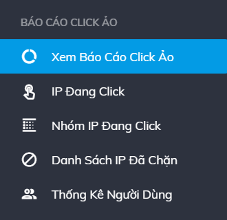
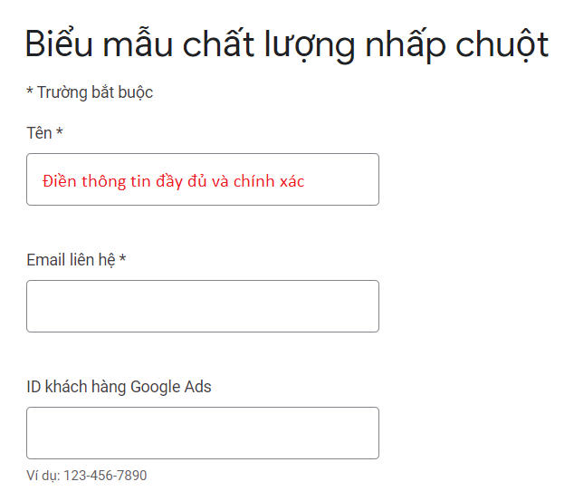
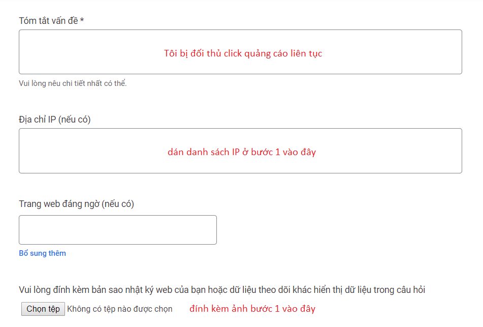
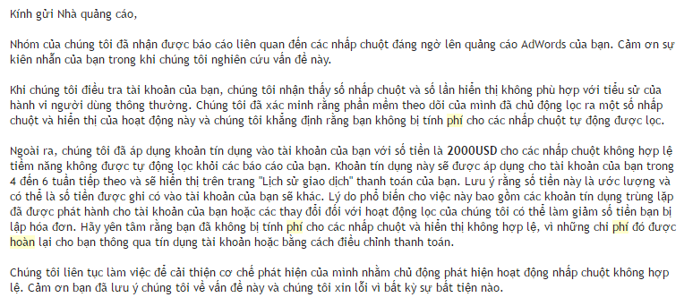

Trong quá trình chạy quảng cáo Google Ads, nếu bạn bị nhiều IP click chuột và nghĩ rằng mình đang bị tính tiền quảng cáo sai so với hiệu quả mang lại và cần yêu cầu hoàn phí mới. Vui lòng đăng nhập vào email nhà quảng cáo và thực hiện theo các bước sau đây:
Bước 1: Lấy danh sách IP click nhiều
Truy cập vào mục Xem Báo Cáo Click Ảo tại menu trái màn hình.

Sau đó bạn chọn Khoảng thời gian thống kê và chụp màn hình tại khu vực
BÁO CÁO IP CLICK QUẢNG CÁO.
Để chụp màn hình, bạn bấm nút: Print Screen (PrtScr) trên bàn phím và dán (Ctrl+V) vào trong
chương trình Paint.
Hình ảnh dạng này sẽ là bằng chứng giúp Google theo dõi lại tài khoản của bạn và lọc bỏ những chi phí sai, từ đó hoàn tiền lại cho bạn.
Bước 2: Gửi yêu cầu xem xét
Bạn cần phải gửi yêu cầu để Google xem xét các IP đã click chuột vào quảng
cáo của bạn. Để thực hiện việc đó, bạn cần truy cập vào trang Gửi yêu cầu
xem xét.
Đây là link do Google cung cấp và bạn cần đăng nhập vào email (đang chạy quảng cáo) của bạn để Google dễ hoàn
trả hơn.
Tại đây bạn điền thông tin theo yêu cầu của Google
Chú ý khi điền mục IP, bạn sẽ điền IP ở Bước 1 vào
Trong quá trình điền thông tin, nếu bạn gặp khó khăn vui lòng liên hệ với hỗ trợ viên để được hỗ trợ nhanh nhất.
Bước 3: Chờ Google phản hồi
Sau khi làm xong Bước 2, bạn chờ khoảng vài ngày sẽ nhận được phản hồi từ Google. Trong trường hợp bạn được hoàn lại tiền, thông báo từ Google sẽ như sau:
Như vậy, bạn đã hoàn tất quá trình yêu cầu bồi hoàn phí. Nếu bạn gặp khó khăn xin vui lòng liên hệ hỗ trợ viên Mr.Long - SĐT, Zalo, Viber 093.757.3139 để được trợ giúp.